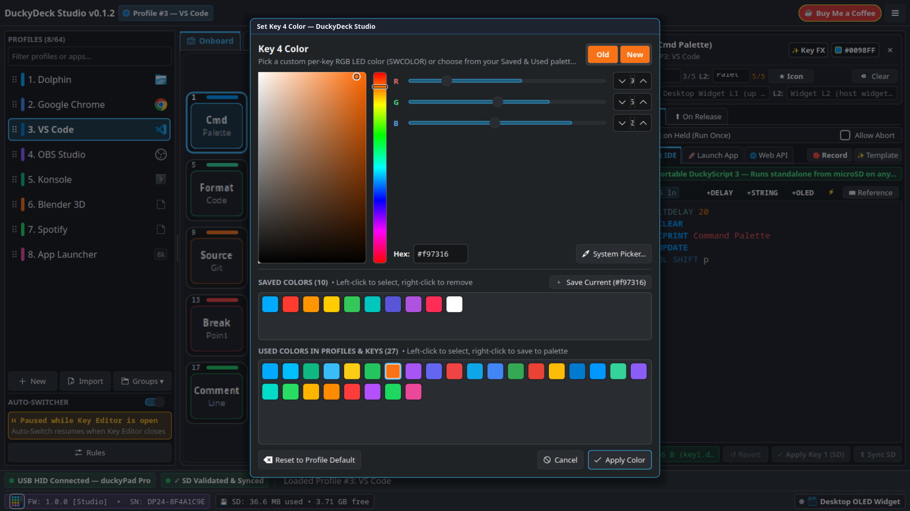
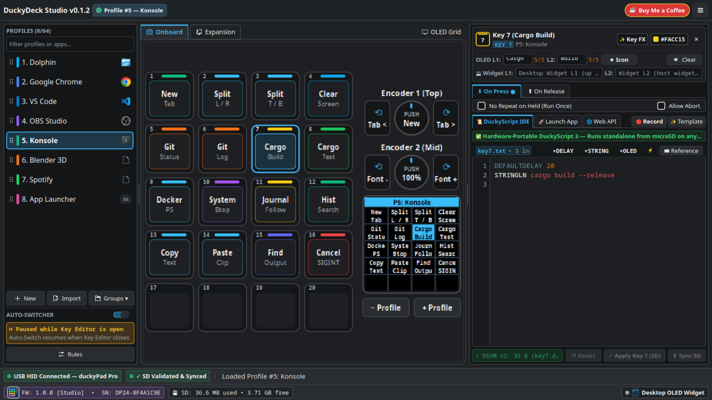
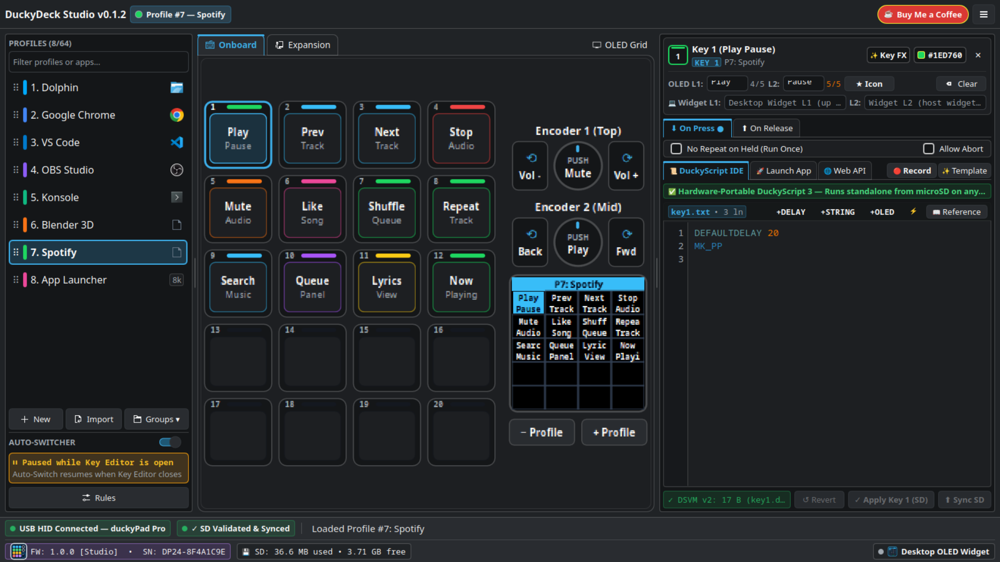
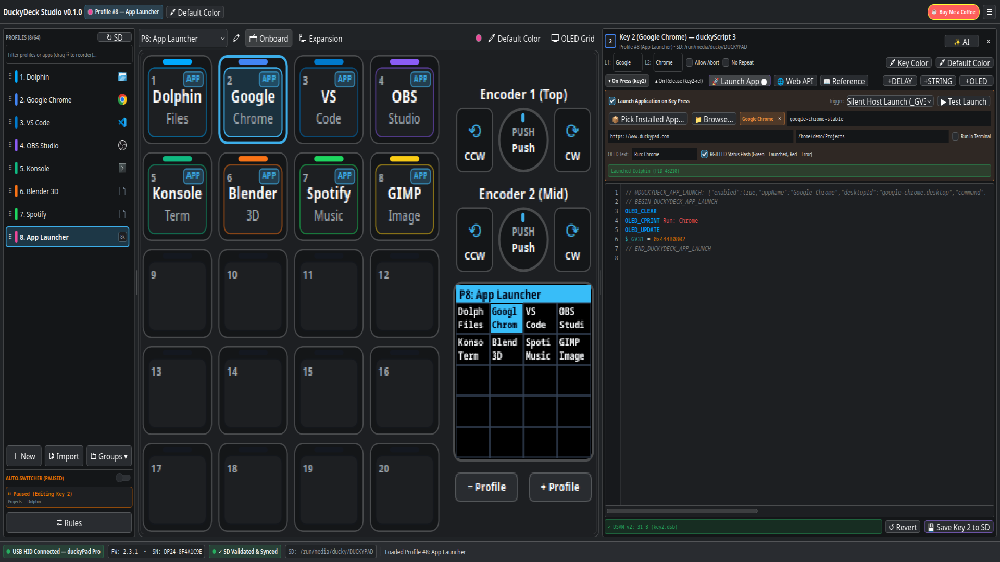
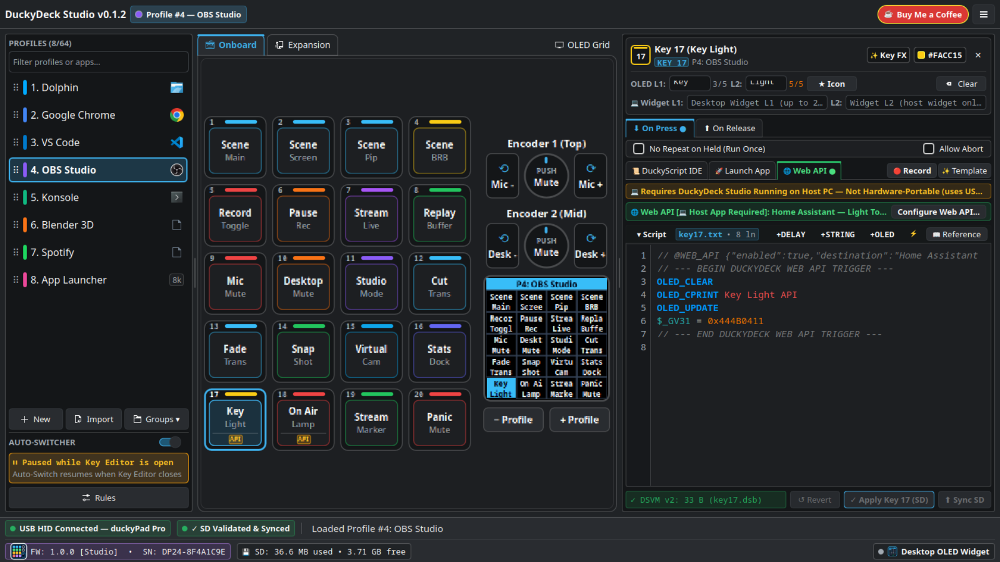
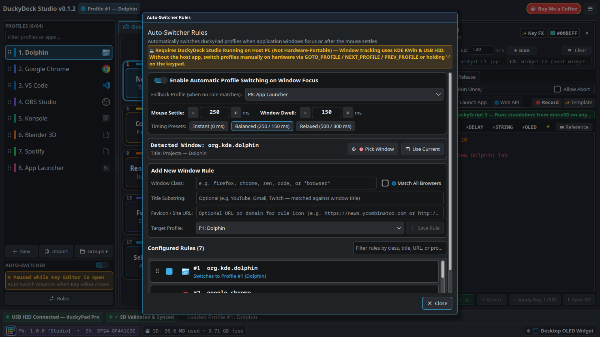
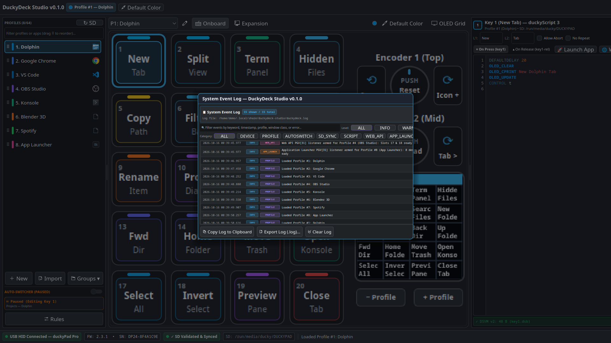

DuckyDeck Studio — User Guide (v0.1.13)
DuckyDeck Studio (v0.1.13) is a native Linux (KDE Plasma 6 / Wayland & X11) and
Windows 10/11 (x86_64) configurator, DSVM v2 bytecode compiler,
Window-Aware Auto-Switcher, and Macro Template Generator (experimental) for the
duckyPad Pro (2024) and duckyPad (2020), crafted with Rust, CXX-Qt, Qt 6, and KDE Plasma 6 Kirigami.
v0.1.13 •
Supported Platforms: Linux (x86_64) & Windows 10 / 11 (x86_64) •
Custom Firmware: v1.1.2 (DDS_FW_1.1.2_0f85dab1.bin) •
KDE Plasma 6 Applet: v1.0.2Official Website & Docs: https://duckydeckstudio.com • Architecture Guide: https://duckydeckstudio.com/architecture.html • GitHub Repository: https://github.com/russellmilliner/duckydeck-studio
⚡ Hardware Portability vs. Host-Dependent Capabilities
DuckyDeck Studio combines standalone hardware configuration (compiled onto your duckyPad's microSD card) with host-assisted Linux & Windows desktop automation. Throughout the app, every feature is badged as either ✅ Hardware-Portable or 💻 Requires DuckyDeck Studio Running on Host PC so you always know what works when you unplug your duckyPad and move it to another computer.
| Capability | Portability | Requires DuckyDeck Studio Running? | Details |
|---|---|---|---|
Standard duckyScript 3 Macros (keyN.txt → .dsb) |
✅ Hardware-Portable | No (once synced to SD) | Keyboard shortcuts, STRING/STRINGLN, mouse moves, media keys, loops, and GOTO_PROFILE run natively on the duckyPad MCU on any OS. |
Key Labels, Static RGB Colors & Key Lighting Scripts (SWCC/SWCF/SWCR) |
✅ Hardware-Portable | No (once synced to SD) | Stored directly in config.txt and .dsb bytecode on the microSD card. |
OLED Orientation (0°, 90°, 180°, 270°) |
✅ Hardware-Portable | No (once synced to SD) | Saved to config.txt on the microSD card (180°/270° require DuckyDeck Studio Firmware v1.1.2). |
🚀 Launch Application Action (APP badge) |
⚠️ Host-Dependent (Not Portable) | Yes (must be running on Host PC) | Emits a silent _GV31 USB HID trigger or F13–F24 hotkey that DuckyDeck Studio listens for on your Linux or Windows PC to spawn local apps. |
🌐 Web API / HTTP Webhook Action (API badge) |
⚠️ Host-Dependent (Not Portable) | Yes (must be running on Host PC) | The duckyPad has no Wi-Fi/Ethernet stack; DuckyDeck Studio executes the HTTP request on the host PC when triggered via USB HID. |
| 🌈 Live RGB Ambient Animator (Rainbow Wave / Breathing / Reactive) | ⚠️ Host-Dependent (Live USB HID) | Yes (must be running on Host PC) | Streams 20 FPS RGB frames over USB HID 0x17. Stopping DuckyDeck Studio restores the profile's static SD card colors. |
| 🪟 Window Auto-Switcher (KWin Wayland / Windows Win32) & Floating OLED Desktop Widget | ⚠️ Host-Dependent (Linux & Windows) | Yes (must be running on Host PC) | Uses a KWin Wayland D-Bus hook on Linux or Win32 GetForegroundWindow tracker on Windows to switch profiles when active windows change and render the desktop widget. |
🎬 Video Tour & Application Screenshots
📦 1. Downloading, Windows / Linux Installation & USB HID Permissions
DuckyDeck Studio (v0.1.13) is open-source and available for Windows 10 & 11 (x86_64)
(Setup Installer .exe & Portable .zip) and Linux (x86_64)
(Universal Flatpak bundle, prebuilt tarball, or built from source) on
github.com/russellmilliner/duckydeck-studio
and duckydeckstudio.com.
Step 1: Choose Your Platform & Installation Method
🪟 Option A: Windows 10 & 11 Installer or Portable ZIP (x86_64)
Zero extra drivers are required on Windows 10/11—Windows automatically binds the duckyPad's USB HID interface and microSD drive on plug-in:
-
Setup Installer (Recommended): Download and run
DuckyDeck-Studio-Setup-v0.1.13-x86_64.exe
(installs per-user to
%LOCALAPPDATA%\Programs\DuckyDeck Studiowith Start Menu, Desktop shortcut, and optional Autostart at Windows Login). -
Portable ZIP (No Installer Required): Download and extract
duckydeck-studio-v0.1.13-windows-x86_64-portable.zip, then launch
duckydeck-studio.exe.
🐧 Option B: Linux Flatpak Bundle (Recommended — Any Linux Distro)
Download the self-contained Flatpak bundle (io.github.duckydeck.Studio) from
duckydeckstudio.com
or GitHub Releases:
# 1. Ensure the KDE 6.11 Flatpak runtime is available from Flathub:
flatpak remote-add --if-not-exists --user flathub \
https://flathub.org/repo/flathub.flatpakrepo
# 2. Download & install the DuckyDeck Studio Flatpak bundle:
curl -LO https://duckydeckstudio.com/releases/duckydeck-studio-v0.1.13-x86_64.flatpak
flatpak install --user -y duckydeck-studio-v0.1.13-x86_64.flatpak
# 3. Launch DuckyDeck Studio (or open from your KDE Application Launcher):
flatpak run io.github.duckydeck.Studio
# 4. Run CLI status or automation commands via Flatpak:
flatpak run io.github.duckydeck.Studio --status📥 Option C: Download Prebuilt Linux x86_64 Tarball or Clone Git Repo
Download the prebuilt release tarball (duckydeck-studio-v0.1.13-linux-x86_64.tar.gz) or clone the repository to build from source:
# Prebuilt Linux x86_64 Tarball:
curl -LO https://duckydeckstudio.com/releases/duckydeck-studio-v0.1.13-linux-x86_64.tar.gz
tar -xzf duckydeck-studio-v0.1.13-linux-x86_64.tar.gz
cd duckydeck-studio-v0.1.13-linux-x86_64
./duckydeck-studio
# Or clone the Git repository:
git clone https://github.com/russellmilliner/duckydeck-studio.git
cd duckydeck-studioStep 2: Install Linux Build Prerequisites (If Building from Source)
-
Arch Linux / CachyOS / EndeavourOS / Manjaro:
sudo pacman -S --needed base-devel rust clang cmake ninja pkgconf \ qt6-base qt6-declarative kirigami syntax-highlighting hidapi libusb -
Fedora (40 / 41+):
sudo dnf install cargo rust clang cmake ninja-build pkgconf-pkg-config \ qt6-qtbase-devel qt6-qtdeclarative-devel kf6-kirigami-devel \ kf6-syntax-highlighting-devel hidapi-devel libusb1-devel systemd-devel -
Ubuntu (24.04+) / Debian / KDE Neon:
sudo apt install build-essential cargo rustc clang cmake ninja-build pkg-config \ qt6-base-dev qt6-declarative-dev libkf6kirigami-dev \ libkf6syntaxhighlighting-dev libhidapi-dev libusb-1.0-0-dev libudev-dev
Step 3: Build & Install Native Linux Binary, Flatpak, or Windows Installer from Source
Compile the optimized release binary, build the Flatpak bundle via bash scripts/build-flatpak.sh, or cross-compile the Windows installer via bash scripts/build-windows.sh:
# 1. Compile optimized Linux release binary
cargo build --release
# 2. Install binary to ~/.local/bin
install -Dm755 target/release/duckydeck-studio ~/.local/bin/duckydeck-studio
# 3. Install duckyScript 3 syntax highlighting for KDE KSyntaxHighlighting
install -Dm644 data/syntax/duckyscript3.xml \
~/.local/share/org.kde.syntax-highlighting/syntax/duckyscript3.xml
# 4. Install desktop entry, icon, and documentation
install -Dm644 data/io.github.duckydeck.Studio.desktop \
~/.local/share/applications/io.github.duckydeck.Studio.desktop
install -Dm644 data/icons/io.github.duckydeck.Studio.svg \
~/.local/share/icons/hicolor/scalable/apps/io.github.duckydeck.Studio.svg
install -Dm644 docs/user-guide.html \
~/.local/share/duckydeck-studio/docs/user-guide.html
install -Dm644 docs/architecture.html \
~/.local/share/duckydeck-studio/docs/architecture.html
# 5. Or build & install the Linux Flatpak bundle from source:
bash scripts/build-flatpak.sh
flatpak install --user -y --reinstall target/release/duckydeck-studio-v0.1.13-x86_64.flatpak
# 6. Or cross-compile the Windows x86_64 Portable ZIP & Setup .exe installer:
bash scripts/build-windows.shPermissionDenied on /dev/hidraw*), DuckyDeck Studio automatically displays an inline
yellow banner at the top of the window (works in both Native and Flatpak builds). Click Install Rules to authorize the 70-duckypad.rules installation via Polkit, or run:
sudo ./data/udev/install-udev-rules.shSupported Hardware Matrix
| Model | USB VID:PID | Mechanical Keys | Rotary Encoders | Expansion Channels | OLED Display |
|---|---|---|---|---|---|
| duckyPad Pro (2024) | 0x0483:0xd11d |
20 RGB Keys (4×5) | 2 Encoders (Slots 21–26) | Up to 32 Channels (Slots 27–58) | 128×128 Monochrome |
| duckyPad (2020) | 0x0483:0xd11c |
15 RGB Keys (3×5) | — | — | 128×64 Monochrome |
🖥️ 2. The 3-Column Workspace
1️⃣ Left Column: Profiles, Templates & Auto-Switcher
Browse up to 64 hardware profiles, filter by profile name or bound application, create profiles from built-in or user Templates,
drag-and-drop the ⠿ handle to reorder profiles, click any profile's color bar to change its default LED color (`BG_COLOR`), and monitor or configure KWin Wayland Auto-Switcher rules.
2️⃣ Center Column: Interactive Hardware Canvas
Interact with the 4×5 RGB key matrix (Keys 1–20), Dual Rotary Encoders (Slots 21–26), live 128×128 OLED screen simulator, and 32 Expansion Module channels (Slots 27–58). Drag and drop keys to swap or shift (`Shift + Drag`) slots.
3️⃣ Right Column: Key Inspector & Script IDE
Opens automatically when you click a key or encoder slot. Edit Line 1 / Line 2 OLED labels (up to 7 characters each), toggle Allow Abort and No Repeat, write `On Press` (`keyN.txt`) and `On Release` (`keyN-release.txt`) scripts, or configure no-code 🚀 Launch App and 🌐 Web API actions.
☕ Top Bar & Hamburger Menu (`☰`)
Displays the active application version, active profile badge, quick Default Color button, ☕ Buy Me a Coffee Ko-fi button, and the ☰ Hamburger Menu for SD sync & mounting, profile templates, profile groups, PGV variables, System Event Log, Settings, and About.
🗂️ 3. Profiles, Templates & Profile Groups
The duckyPad Pro supports up to 64 profiles (`profile_1` through `profile_64`). Each profile stores its own default background LED color (`BG_COLOR`), per-key custom colors (`SWCOLOR`), key labels (`zN` / `xN`), OLED & Desktop Widget orientations, and compiled bytecode binaries (`.dsb`).
- Create a Profile (Blank or From Template): Click + New at the bottom of the left sidebar, type a name (up to 16 characters), optionally select any built-in or user-saved Template from the dropdown, and press Enter.
- 📋 Profile Templates:
- Click 📋 Templates... at the bottom of the sidebar (or 📋 Profile Templates... in the `☰` menu) to browse built-in starter templates (Media & Volume Deck, IDE & Git Workflow, Browser & Research, Numeric Keypad (Numpad)) and your own custom templates (`~/.config/duckydeck-studio/profile_templates/`).
- Copy Any Profile to a Template: Right-click any profile in the sidebar and choose 📋 Save Profile as Template... (or click 📋 Save as Template... in Profile Settings) to save its keys, scripts, colors, and orientations as a reusable template.
- Apply a Template to an Existing Profile: Open 📋 Templates... and click Apply to Current Profile to overwrite the active profile with that template's layout.
- ⚙ Profile Settings (OLED, Instant Desktop Widget Orientation & Profile Change Webhook): Click the ⚙ Profile Settings button in the center toolbar (or right-click a profile → Profile Properties...) to configure:
- Hardware OLED Orientation (`0°`, `90°`, `180°`, `270°`): Rotates the physical duckyPad Pro OLED screen and key grid (`180°` & `270°` require DuckyDeck Studio Firmware `v1.0.0`).
- 💻 Desktop Widget Orientation (`Follow OLED`, `0°`, `90°`, `180°`, `270°`): Independently orient the floating on-screen Desktop Widget (rotating both the key grid positions and the text labels inside each key) without changing how the physical duckyPad sits on your desk! Changes apply immediately and do not require a microSD card sync.
- 🔔 Profile Change Webhook (On Profile Activated): Configure a per-profile HTTP webhook (`GET`/`POST`/`PUT`/`PATCH`/`DELETE`, URL, custom headers, and JSON body with placeholders `{{profile_number}}`, `{{profile_name}}`, `{{previous_profile_number}}`, `{{previous_profile_name}}`, `{{source}}`, `{{device_serial}}`, `{{timestamp}}`) that fires automatically whenever that profile becomes active.
- Dim Unused Keys (`DIM_UNUSED_KEYS`): Automatically turns off LEDs on unconfigured keys.
- Filter, Reorder & Fallback Protection:
- Filter Profiles: Type in the profile filter box to filter by profile name or bound application; click the inline
✕button inside the filter box to clear the filter. - Reorder Profiles: Hover over any profile to view the helper tooltip ("Drag ⠿ to Reorder • Double-click to Rename • Right-click for Options") and drag its
⠿handle to reorder. All Auto-Switcher rules and the Fallback Profile setting automatically update to follow reordered profiles! - Protected Fallback Profile (`★ FALLBACK`): Every profile group automatically ensures a default Fallback Profile exists. The Fallback Profile cannot be deleted, and if another profile referenced by an Auto-Switcher rule is deleted, that rule automatically updates to reference the Fallback Profile.
- Filter Profiles: Type in the profile filter box to filter by profile name or bound application; click the inline
- Profile Groups (`.duckygroup.json`): Click Groups ▾ at the bottom of the sidebar (or in the `☰` menu) to save all profiles and Auto-Switcher rules into a single portable `.duckygroup.json` bundle, load an existing bundle, or start a fresh workspace (which automatically initializes Profile #1 as the Default Fallback Profile).
🎹 4. Interactive Hardware Canvas & OLED Simulator
- Header-Footer Split Keycap Layout: Each keycap in the 4×5 matrix uses a clean, non-overlapping three-zone layout tested up to 115%+ UI zoom:
- Top Header Bar: Compact key number (`1..20`) on the left next to the pill-shaped per-key RGB LED color bar on the right.
- Center OLED Label Preview: Displays Line 1 and Line 2 labels (plus crisp 1-bit pixel-art icons) centered inside the keycap.
- Bottom Footer Strip: Shows host-action pills (
APPorAPI) on the left and repeat/abort indicators (↻/⏹) on the right.
- Select / Deselect a Slot: Left-click any key (1–20), encoder action (21–26), or expansion slot (27–58) to open the Right Inspector. Click the selected key again (or click
✕in the inspector header) to close the inspector. - Drag-and-Drop Swap vs. Shift:
- Drag & Drop: Swaps the source key and target key (including scripts, labels, and custom RGB colors).
- Shift + Drag & Drop: Inserts the dragged key at the target slot and shifts intermediate keys!
- Right-Click Key Context Menu:
- Copy Key X / Paste → Slot Y: Copy a key's full configuration and paste it onto another key (even across different profiles).
- Set Key X Color: Opens the Color Picker window with your Saved & Used color palettes.
- Clear / Reset Key X: Clears labels, scripts, and custom RGB color on that slot.
- Toolbar Toggles:
- ⚙ Profile Settings: Configure profile name, default LED color, Hardware OLED Orientation (`0°`, `90°`, `180°`, `270°`), instant Desktop Widget Orientation (`Follow OLED`, `0°`, `90°`, `180°`, `270°`), and Per-Profile Change Webhooks.
- ⚡ 32ch: Show or hide the 4×8 (32-channel) Expansion Module panel (Slots 27–58).
- OLED: Grid / Script: Preview either the standard 4×5 key label grid or custom `OLED_LINE` / `OLED_CIRCLE` / `OLED_RECT` drawing commands on the simulated 128×128 OLED screen.
🖼️ OLED Icon Library — 204 Color UI & 1-Bit Monochrome Icons
DuckyDeck Studio (v0.1.13) and Custom Firmware (DDS_FW v1.1.2) include 204 unique, zero-duplicate OLED icons
(199 application & macro icons across 14 categories in the OLED Button Icon Picker, plus 5 keyboard modifier glyphs).
Every icon includes both a Color Desktop UI symbol and a hand-crafted 1-Bit Monochrome SSD1306 OLED bitmap
(16×16 full-cell and 10×10 2-line top icon + text caption), plus a 4-character Stock ASCII fallback for standard firmware.
🎨 5. Key & Profile Color Picker (Saved & Used Palettes)
Open the Color Picker by right-clicking any keycap and choosing Set Key X Color, clicking Key Color in the right inspector, or clicking Default Color in the top bar / center toolbar / profile sidebar.
🌈 Interactive HSV + RGB Controls
- 2D Saturation / Value Square & Hue Bar: Drag the crosshair to blend shades visually.
- R / G / B Sliders & SpinBoxes (`0–255`): Dial in exact hardware LED values.
- Hex Input (`#RRGGBB`) & Old/New Swatch: Paste hex codes directly or click the Old swatch to revert.
- System Picker...: Launch the native KDE/OS color dialog and screen eyedropper anytime.
📌 Saved Colors & Used Colors Palettes
- Saved Colors Palette: Click + Save Current (`#RRGGBB`) to pin colors to your persistent palette (`~/.config/duckydeck-studio/kwin_rules.json`). Left-click to select, double-click to apply immediately, or right-click a swatch to remove it.
- Used Colors Palette: Automatically lists every unique color currently used in any profile's `BG_COLOR` or key's `SWCOLOR` across all loaded profiles. Left-click to reuse a color, or right-click a Used Color swatch to add it to your Saved Colors!
- Reset to Profile Default: When editing a key color, click Reset to Profile Default to remove its custom `SWCOLOR` and inherit the profile's `BG_COLOR`.

💾 6. microSD Sync, Mounting & Firmware Manager (`v1.0.0` & Official Catalog)
Edits you make in DuckyDeck Studio are saved immediately to your local profile cache (`~/.local/share/duckydeck-studio/profiles_cache/`) so you never lose work, even when the duckyPad is unplugged.
- Mount SD Card (`☰ → Mount SD Card`): When an unmounted duckyPad microSD card (or USB Connected Duckypad) is detected, the `☰` menu displays Mount SD Card so you can mount it with one click without triggering a full sync.
- Status Bar Sync Badge: The bottom status bar shows whether your local profiles match the hardware microSD card (✓ SD Synced vs. ⚠ Unsynced Changes). Host-only settings like Desktop Widget Orientation (`DW_ROTATION`) and Profile Change Webhooks apply immediately without requiring an SD sync.
- 📋 Changes Summary: Click the sync status badge (or 📋 Summary) to inspect a per-profile diff of added, modified, or deleted keys before writing to hardware.
- ⬆ Sync to SD: Mounts the duckyPad Pro microSD card (automatically via USB Mass Storage mode `0x1B` + `udisksctl`, or direct SD mount), compiles every `keyN.txt` script into a DSVM v2 `.dsb` binary, writes `config.txt` and `profile_info.txt`, flushes the filesystem, and verifies the written files.
- DuckyDeck Studio Firmware (
v1.1.2—DDS_FW_1.1.2_0f85dab1.binfor Pro &v1.1.3—DDS20_FW_1.1.3_1288faee.dfufor 2020) & Official Firmware Catalog Downloader:-
Download Firmware Images:
⬇ GitHub Release (
v0.1.13) | ⬇ duckyPad Pro (DDS_FW_1.1.2_0f85dab1.bin, CRC32:0f85dab1) | ⬇ duckyPad 2020 (DDS20_FW_1.1.3_1288faee.dfu, CRC32:1288faee) - DuckyDeck Studio includes custom firmware builds for both duckyPad Pro (
DDS_FW_1.1.2_0f85dab1.bin, automatically staged to microSD asDPP_FW_1.1.2_0f85dab1.binfor universal bootloader compatibility) and duckyPad 2020 (DDS20_FW_1.1.3_1288faee.dfu, STM32F072 DfuSe image with software Jump-to-DFU bootloader, automaticDP20_XXXXFAT volume label stamping, andserial_number DP20_XXXXXXXXconfig identification), identified by the DuckyDeck Studio icon badge in the status bar and USB HID0x00signature bytes'D','D','S'. - Download Official Firmware List in Firmware Manager (
☰ → Firmware Update...): Click ⬇ Fetch Official List from Site inside the Firmware Manager window to query the officialdekuNukem/duckyPad-Prorepository, browse all available official firmware versions, and click ⬇ Download .bin or Download & Install Selected Firmware (with automatic IEEE CRC32 checksum verification).
-
Download Firmware Images:
⬇ GitHub Release (
🔧 What DuckyDeck Studio Firmware v1.1.2 Adds Over Standard duckyPad Pro Firmware (3.3.5)
| Capability | Standard Official Firmware (3.3.5) |
DuckyDeck Studio Firmware (1.1.2 — DDS_FW_1.1.2_0f85dab1.bin) |
|---|---|---|
| Firmware Filename Prefix | DPP_FW_*.bin |
✅ Distinct DDS_FW_*.bin prefix preventing confusion with upstream official releases |
| 1-Bit Monochrome OLED Key Icons | ASCII 32..126 text only (? for non-ASCII) |
✅ Adaptive 1-bit pixel-art icons: 45+ built-in icons across Home Automation, Media, Dev, System, Browser & Editing; full-cell 16×16, top-line 10×10 + text, and inline glyphs |
| Home Automation Native Icons | ❌ None | ✅ 12 Native Smart Home Icons: Light Bulb, Group, Plug/Switch, Lock, Motion, Shield, Thermometer, Thermostat, Fan, Garage, Blinds, and Camera |
| OLED SPI DMA Performance | Full 1024-byte framebuffer transmitted over SPI on every screen refresh | ✅ Dirty Page Bitmask & Shadow Buffer: Only modified 128×8 byte pages transmitted over SPI DMA, eliminating redundant traffic when updating clock digits, single key labels, or status icons |
| Smooth LED Color Fade | Stepwise jumps only (SWC_SET) |
✅ Hardware SWC_FADE_TO Opcode (89): Smooth 60 FPS interpolated linear color fading over any duration (standalone in bytecode) |
| Active Profile Switch Speed & SD Health | Blocking FAT32 file writes on every profile change (20–200 ms stall) | ✅ Internal Flash NVS Cache: Active profile changes persist instantaneously to wear-leveled NVS with 0 ms SD card blocking |
| USB HID Responsiveness | Immediate 1–10 ms FreeRTOS scheduler yield when endpoint is busy | ✅ Sub-Millisecond SOF Spin-Wait: Microsecond spin retry (esp_rom_delay_us(50)) dispatches packets on immediate 1 ms USB SOF boundary |
| UTF-8 Key Labels & Buffer Size | 8-byte buffer (KEYNAME_SIZE 8), raw byte truncation at 5 bytes |
✅ 24-byte UTF-8 buffer (KEYNAME_SIZE 24) with multi-byte UTF-8 codepoint decoding, glyph-aware truncation (5 glyphs in 0°/180°, 4 glyphs in 90°/270°), and dual ui_z<N>/ui_x<N> + ASCII fallback z<N>/x<N> directives |
| Hardware OLED Screen Orientation | 0° (Portrait) and 90° CW (IS_LANDSCAPE 1) only |
✅ Full 4-Way Rotation (0°, 90°, 180°, 270°): adds 180° Inverted Portrait (IS_LANDSCAPE 2 / OLED_ROTATION 180) and 270° Counter-Clockwise Landscape (IS_LANDSCAPE 3 / OLED_ROTATION 270) with automatic CCW 4×5 grid coordinate remapping |
USB HID Firmware Identification (0x00) |
Reports version 3.3.5, no custom capability signature |
✅ Reports 1.0.0 + 'D','D','S' signature bytes (offsets 19..21) so DuckyDeck Studio automatically detects custom firmware support |
| DSVM v2 Bytecode & SD Compatibility | DSVM v2 (.dsb) |
✅ 100% compatible with all DSVM v2 .dsb scripts and standard microSD profiles |
📜 7. duckyScript 3 & Built-In DSVM v2 Bytecode Compiler
DuckyDeck Studio includes a full, pure-Rust duckyScript 3 → DSVM v2 (`.dsb`) bytecode compiler with real-time syntax checking and KDE `KSyntaxHighlighting`. Standard duckyScript 3 macros are 100% Hardware-Portable once synced to your microSD card.
- Live Bytecode Verification: As you type in the script editor, the header badge shows
✓ Valid DSVM (N B)or highlights the exact line number and syntax error. - On Press vs. On Release Tabs: Every key and slot supports both an On Press (`keyN.txt`) script and an On Release (`keyN-release.txt`) script.
- 📖 Command Reference Drawer: Click 📖 Reference in the script toolbar to browse and insert all duckyScript 3 commands (`STRING`, `STRINGLN`, `DELAY`, `KEYDOWN`, `KEYUP`, `SWCC`, `SWCF`, `SWCR`, `OLED_PRINT`, `OLED_LINE`, `OLED_RECT`, `OLED_CIRCLE`, `OLED_UPDATE`, `IF/ELSE/END_IF`, `WHILE/END_WHILE`, `FUNCTION/END_FUNCTION`, `GOTO_PROFILE`, `_GV0.._GV31`, etc.).


🚀 8. Launch Application Builder (Linux & Windows)
Turn any duckyPad key into a one-press Linux or Windows desktop application launcher without writing shell scripts by hand.
- Select a key (1–20) to open the Right Inspector and click the 🚀 Launch App button in the editor toolbar.
- Check Launch Application on Key Press.
- Click 📦 Pick Installed App... to search all installed desktop applications on your OS—on Linux, it scans
.desktopentries across/usr/share/applications, Flatpak exports, and~/.local/share/applications; on Windows 10/11, it scans Start Menu.lnkshortcuts across%ProgramData%\Microsoft\Windows\Start Menu\Programsand%APPDATA%\Microsoft\Windows\Start Menu\Programs—or type any custom command,.exepath, and arguments. - Choose from 165+ built-in OLED pixel-art icons across 13 categories (
Browser,Word,Excel,Slides,Photo,CAD/3D,Media,Nav,Edit,System,Dev,Home,Badges) or use the hardware Record Key / Mouse Macro recorder (Linuxevdev/ Windows Win32GetAsyncKeyState). - Choose the Trigger Mode:
- Silent Host Launch (`_GV31`) (Default — No Keyboard Shortcut Needed): Pressing the key on the duckyPad writes a unique profile+slot token to `_GV31`. DuckyDeck Studio's background HID listener detects the change and spawns the application directly on your Linux or Windows desktop!
- F13–F24 Global Hotkey (`evdev` on Linux / Win32 `RegisterHotKey` on Windows): Emits `F13`–`F24` over USB HID keyboard and triggers the launch via DuckyDeck Studio's background global hotkey listener.
- Click ▶ Test Launch anytime to test the command immediately and inspect the result in the System Event Log (`APP_LAUNCH`).

APP keycap badges and instant USB HID host launching.🌐 9. Web API / Webhook Builder & 🏠 Home Assistant Entity Search
Trigger Home Assistant devices/entities, REST APIs, Miniflux, OBS, or custom HTTP endpoints directly from a duckyPad key:
- Select a key and click 🌐 Web API in the inspector toolbar (or open the full Web API / HTTP Webhook configurator window).
- 🏠 Search Home Assistant Devices & Entities:
- Enter your Home Assistant URL (e.g.
http://homeassistant.local:8123) and a Long-Lived Access Token (created in Home Assistant under Profile → Security → Long-Lived Access Tokens), then click Save HA Connection. - Select a domain filter (
All Domains,light,switch,scene,script,automation,button,input_boolean,media_player,cover,fan,climate,lock), type a search query, and click 🔍 Search Entities. - Click ⚡ domain.service (or Turn On / Turn Off) next to any entity to automatically populate the HTTP
POSTendpoint (/api/services/<domain>/<service>),Authorization: Bearerheader, JSON{"entity_id": "..."}body, and OLED feedback text for the selected key!
- Enter your Home Assistant URL (e.g.
- Custom REST / Webhook Endpoints: Configure any HTTP Method (`GET`, `POST`, `PUT`, `PATCH`, `DELETE`), URL, custom headers (`Header: Value` per line), and request body (JSON/text).
- Click Test Webhook Now to fire the HTTP request immediately and view status codes, latency, and errors in the System Event Log (`WEB_API`).

🪟 10. Window Auto-Switcher (KDE Plasma 6 Wayland & Windows 10/11 Win32) & Floating OLED Desktop Widget
+ / - buttons on the duckyPad.
DuckyDeck Studio features a cross-platform active-window listener—using a native Rust + zbus KWin Wayland hook on Linux (KDE Plasma 6) and a native Win32 foreground window tracker (GetForegroundWindow + QueryFullProcessImageNameW) on Windows 10/11—to automatically switch duckyPad hardware profiles when you focus different windows or browser tabs.
- 🎯 Crosshair Window Picker: Right-click any profile in the sidebar and select Bind Window to This Profile (Pick Window)... (or click Pick Window inside the Rules dialog). Click any open window on your Linux or Windows desktop to automatically capture its window class / executable name, window title, and application icon.
- ⌨️ Main-Keyboard Modifier Layer Shift (Hold / One-Shot / Double-Tap + Hold / Toggle): Hold or tap a modifier or dedicated key on your main PC keyboard (
Menu / App,Right Ctrl,Right Alt / AltGr,Right Shift,Left Ctrl,Left Alt,Left Shift,Super,Ctrl + Alt,Ctrl + Super,Caps Lock,Scroll Lock,Pause,Fn, orF13–F24) to shift the duckyPad to a global desktop profile and automatically restore the active window's profile upon release or completion. Includes a configurable Chord Guard (default200 ms) so normal shortcuts likeCtrl+Cnever flicker the duckyPad, plus One-Shot Sticky mode (stays shifted for 1 duckyPad key press or timeout), Double-Tap + Hold, and Toggle Lock mode (works out-of-the-box on Linux via/dev/hidraw*uaccess+evdevand on Windows via Win32GetAsyncKeyState). - Filter & Reorder Rules: Filter rules using the search box (with an inline
✕clear button), double-click any rule to scroll to and focus the Edit Rule box, and hover over any rule row to view the helper tooltip ("Drag ⠿ to Reorder • Double-click to Edit • Right-click for Options"). - Browser Tab Title & Regex Matching: When picking a web browser (Zen Browser, Firefox, Chrome, Edge, Brave, Vivaldi, etc.), DuckyDeck Studio automatically strips the browser suffix so your rule matches the specific web app or tab title (e.g. `Miniflux`, `GitHub`, `YouTube`), or you can use `*browser*` or regular expressions to match window titles.
- Automatic Pause While Editing: Whenever the Right Key Inspector is open, the Auto-Switcher automatically pauses (`AUTO-SWITCHER (PAUSED)`) so switching to a browser or terminal to copy a URL or command won't yank the active profile away from the key you're editing!
- Floating OLED Desktop Widget,
↗ Full AppButton & 4-Way Rotated Key Labels: Mirrors the 128×128 OLED screen on your desktop with configurable scale (`1x`–`3x`), transparency (`0%`–`85%`, persisted across restarts), multi-monitor screen & position memory (KWin Wayland placement on Linux, Win32HWND_TOPMOSTon Windows), a footer↗ Full Appbutton to immediately restore and focus the main DuckyDeck Studio window from the system tray, and instant independent per-profile orientation (`Follow OLED`, `0°`, `90°`, `180°`, `270°`) that rotates both the key grid positions and the text inside each key without requiring a microSD card sync.

🔢 11. Persistent Global Variables (`_GV0`..`_GV31`)
Open Variables (`_GV`)... from the `☰` menu to inspect and live-edit all 32 32-bit non-volatile Persistent Global Variables (`_GV0` through `_GV31`) over USB HID commands `0x18` (read) and `0x19` (write) in Signed Decimal, Unsigned Decimal, or Hexadecimal format.
_GV31 (encoded via encode_pgv31_trigger) for instant Web API and Desktop Application Launch triggers when using the default Silent USB HID Listener trigger mode.
✨ 12. Macro Template Generator (experimental)
Click ✨ Template in the Right Inspector header (or Macro Template Generator (experimental)... in the `☰` menu) to generate duckyScript 3 macro templates from your local KDE shortcuts (`~/.config/kglobalshortcutsrc`). Select any matching application shortcut to convert its key sequence directly into duckyScript 3 syntax and validate it with the built-in DSVM v2 compiler.
📋 13. System Event Log
Open System Event Log... from the `☰` menu (or from the About window) to view real-time diagnostic events across all subsystems:
DEVICE— USB HID connection, firmware checks, RTC sync, and rebootsPROFILE— Profile selection, creation, templates, renaming, reordering, and color changesAUTOSWITCH— Active window focus changes (KWin Wayland or Windows Win32) and automatic profile switchesSD_SYNC— microSD mounting, `.dsb` bytecode compilation, and file validationSCRIPT— Slot script saves and compiler diagnosticsWEB_API— HTTP webhook triggers, profile-change webhooks, status codes, latency, and response summariesAPP_LAUNCH— Application launch triggers, desktop IDs, PIDs, and error diagnosticsSYSTEM— Startup, REST API Server events, configuration persistence, and UI events
Logs are also persisted on disk at ~/.local/share/duckydeck-studio/logs/system_events.log on Linux or %LOCALAPPDATA%\duckydeck-studio\logs\system_events.log on Windows and can be filtered, copied, or exported to a `.log` file.

⚙️ 14. Settings, HTTP REST API Server & Security Implications
1. Full Hardware & Host Control: Any client that can reach the HTTP REST API can switch, create, modify, or delete profiles and key scripts, synchronize bytecode to the microSD card, inject DuckyScript keystroke/mouse macros onto the host PC, control RGB LEDs and the OLED display, and execute host actions (APP_LAUNCH, WEB_API, SYS_ACTION) configured on slots.
2. Network Exposure (127.0.0.1 vs 0.0.0.0): The default listen IP 127.0.0.1 (port 28491) restricts access strictly to local processes on your computer. Changing the listen IP to 0.0.0.0 or a LAN IP exposes an unencrypted plain-HTTP server to all devices on your local network.
3. Token Authentication & Remote Access: Keep Require Bearer Token Authentication enabled at all times (clients must send Authorization: Bearer <token> or X-API-Token: <token>). Treat your generated 160-bit ddk_... token like a password, and never expose the plain-HTTP port directly to the public internet—use an HTTPS reverse proxy or SSH/WireGuard tunnel for remote access.
- 🌐 HTTP REST API Server (`Settings → HTTP REST API Server`):
- Enable or disable the embedded REST API server, choose the Listen IP (default
127.0.0.1) and Port (default28491), or click Reset Defaults (127.0.0.1:28491). - Click Generate Token to generate a new cryptographic Bearer token and Copy Token to copy it to your clipboard.
- Control all duckyPad functions via JSON endpoints under
/api/v1/*(/api/v1/health,/api/v1/status,/api/v1/profiles,/api/v1/profiles/select,/api/v1/profiles/reorder,/api/v1/profiles/{num},/api/v1/profiles/{num}/slots/{slot},/api/v1/profiles/{num}/slots/{slot}/trigger,/api/v1/dsvm/compile,/api/v1/templates,/api/v1/pgv,/api/v1/leds,/api/v1/sd/sync,/api/v1/device/sleep|wake|reboot|sync-rtc,/api/v1/logs). - OpenAPI 3.0 / Swagger Specification & Reference: View
docs/REST_API.md,docs/openapi.yaml, anddocs/swagger.json, or fetch the live spec directly from the server atGET /api/v1/openapi.json,GET /api/v1/swagger.json, andGET /api/v1/openapi.yaml.
- Enable or disable the embedded REST API server, choose the Listen IP (default
- 🔔 Global Profile Change Webhook (`Settings → Global Profile Change Webhook`): Configure an HTTP webhook that fires automatically whenever the active profile changes (via UI, physical duckyPad buttons, Window Auto-Switcher, or REST API).
- Global UI Text Zoom (`75%`–`160%`, Minimum `10pt` Base Font) & High-Contrast Controls: Adjust UI text zoom across the entire application using Ctrl++ / Ctrl+= (zoom in), Ctrl+- (zoom out), or Ctrl+0 (reset to `100%`), or via `Settings → Global Text Scale`. All checkboxes and scrollbars feature high-contrast borders in both Dark and Light modes, and all popup windows can be closed with Esc.
- System Tray & Autostart (Linux & Windows): DuckyDeck Studio integrates natively with the KDE Plasma 6 System Tray (`StatusNotifierItem`) and the Windows 10/11 Notification Area, displaying a custom dynamic icon with your active profile number and color badge, live Profile & SD Sync status headers, Show / Hide DuckyDeck Studio, Toggle Desktop OLED Widget, Enable Window Auto-Switcher, Autostart at Login (XDG
~/.config/autostart/on Linux; RegistryHKCU\Software\Microsoft\Windows\CurrentVersion\Run\DuckyDeckStudioon Windows), About DuckyDeck Studio, and Quit DuckyDeck Studio.
🛠️ 15. Troubleshooting & FAQ
❓ My Web API or Launch App key didn't trigger on the duckyPad
1. Ensure DuckyDeck Studio is running on your host PC (either open on screen or minimized to the system tray)—Launch App (`APP`) and Web API (`API`) actions are host-dependent and require DuckyDeck Studio's USB HID listener.
2. Check the bottom status bar—if it says ⚠ Unsynced Changes, click ⬆ Sync to SD so the compiled `.dsb` bytecode is written to the duckyPad's microSD card.
3. Open ☰ → System Event Log and filter by WEB_API or APP_LAUNCH to see the exact trigger event (`_GV31` or `F13–F24`) and any HTTP or process errors.
❓ Auto-Switcher isn't switching profiles right now
Check if the Right Key Inspector is currently open—Auto-Switcher intentionally pauses (`⏸ Paused (Editing Key N)`) while you are editing a key so your active profile doesn't jump away while you switch windows. Close the key editor (`✕`) to resume automatic switching.
🙏 16. Special Thanks to dekuNukem & Official duckyPad Links
🦆 Official duckyPad & DuckyDeck Studio Websites
Explore official hardware specifications, getting started guides, DuckyScript 3 documentation, and firmware updates:
- DuckyDeck Studio Documentation: https://duckydeckstudio.com
- Official duckyPad Site: https://www.duckypad.com
- duckyPad Pro GitHub: github.com/dekuNukem/duckyPad-Pro
- duckyPad (2020) GitHub: github.com/dekuNukem/duckyPad
🛒 Where to Buy — dekuNukem's Official Tindie Store
Order an official duckyPad Pro, hot-swappable mechanical macropad kits, rotary encoder modules, and expansion accessories directly from dekuNukem:
- Tindie Storefront: tindie.com/stores/dekunukem
- duckyPad Pro on Tindie: duckyPad Pro: Macro Scripting Beyond QMK/VIA